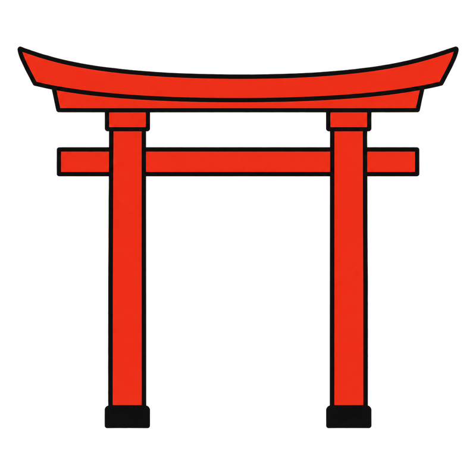

Japan and shrines — in a country with 80,000 shrines
- Shinto has no founder. No scripture. No procedure for joining. Nobody created it as a system. It was simply there — and that is how it has reached the present. This is why counting "believers" does not really work.
- Many Japanese people go to both shrines and temples. A wedding at a shrine, a funeral at a temple, Christmas in December. It is understood as a division of roles, not a contradiction.
- One simple distinction: a torii means a shrine; a Buddhist statue means a temple. Some places contain both. For more than 1,000 years, shrines and temples shared the same grounds. The next section explains why.
- The object of prayer is different. Shrines deal with this life — health, work, exams, safe childbirth. Temples deal with the dead and ancestors. That is why shrines have no graves.
- ⚠️One thing that makes shrine visits easier for travellers: anyone can enter. Almost no shrines charge admission. Belief is not required. There is no dress code, and tattoos are not treated as an offence — unlike at some onsen.
Shrine or temple — how to tell

Shrine
Temple
A torii means a shrine; a Buddhist statue means a temple.
The reason becomes clearer 1,500 years back.
History — how shrines were tied to the state, then untied
Most of the shrine system seen today was put in place from the Meiji period onwards. The buildings may be old. The system is new.
- Ancient Japan — there were no shrine buildings. Mountains, rocks and forests themselves were worshipped. Some shrines still preserve that form. Omiwa Jinja in Nara has no main sanctuary and worships Mount Miwa. Yamamiya Sengen Jinja in Shizuoka has no shrine building and faces Mount Fuji from afar. The buildings came later.
- 6th century: Buddhism arrives → Shinto-Buddhist syncretism. For more than 1,000 years after that, shrines and temples occupied the same places. One explanation held that the kami were forms taken by Buddhas.
- 927: the Engishiki Jinmyocho. The imperial court is said to have listed 2,861 shrines in a register. It was the first state-wide list used to administer shrines. Shrines on the list are called Engishiki-listed shrines.
- Late Heian period — the ichinomiya system emerges. A hierarchy in each province gradually took hold. (→ "The gods and the map's classifications" for more.)
- Medieval period — the Minamoto clan adopted Hachiman as a god of war, and the cult spread across Japan with warrior governments. Pilgrimage to Kumano became popular.
- Edo period — pilgrimages to Ise. Shrines gave ordinary people a reason to travel. Some years are said to have seen mass pilgrimages involving millions.
- 🔴Meiji — separation of Shinto and Buddhism, and State Shinto. The government forcibly separated shrines and temples. Haibutsu kishaku destroyed many Buddhist statues and scriptures. Shrines were positioned as state institutions, and official ranks such as Kanpei Taisha and Kokuhei Taisha were formalised.
- 🔴Post-war — state control ends. Shrines became private religious corporations, and the official ranking system was abolished. That is why historical ranks now carry the prefix "former", as in "former Kanpei Taisha".
- Today — about 80,000 shrines. Many are maintained by donations from local parishioners. Depopulation is making some impossible to maintain. More shrines now have no resident priest.